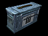
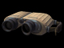
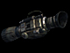
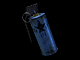

Field Ops
Role
Re-supplies teammates with Ammo Packs, Deploys and Targets Fire Support, uses the Vampire Airstrike Marker to call in Bombing runs.
Specialty
Artillery support and Ammo re-supply
Weapons
Equipment
- Ammo Pack
- Air Strike Markers
- Artillery Deploy Tool
- The Targeting Tool
Deployables
Instructional info

Ammo Pack:
Fieldops should equip Ammo Packs and drop them near teammates exchanging fire with the enemy or near teammates calling for ammo which is displayed on the mini map. When your teammates walk over an Ammo Pack a fraction of their total ammo will be restored. Drop as many Ammo Packs as  you can but keep in mind you can only drop as many Packs as your Fieldops energy allows. As the Fieldops energy replenishes you can drop more Ammo Packs. It’s recommended that the Fieldops assist in the battle or call in artillery while his energy is replenishing to be most effective.
you can but keep in mind you can only drop as many Packs as your Fieldops energy allows. As the Fieldops energy replenishes you can drop more Ammo Packs. It’s recommended that the Fieldops assist in the battle or call in artillery while his energy is replenishing to be most effective.
Note: Grenades can only be restocked by a Medic's Supply Crate.

Artillery Deploy Tool:
To place an artillery deployable select the Deploy Tool from the weapon menu and press the "Mouse 1" button to activate the Deploy Tool. The camera will now pull into third person view and a colored wireframe outline of artillery deployable should be visible. If the deployable grid is red or yellow it means  the deployable cannot be placed in this location. Move around the map and find a location where the placement grid is green. Once a green deploy location has been located press the Use Key ("Default F") to cycle through the available artillery deployables and then press "Mouse 1" button again to place the deployable. Once placed you can now rotate the deployable to point in the desired direction, the arrow that points away from the deployable is the direction the deployable will face once deployed. Press the "Mouse 1" button again to deploy.
the deployable cannot be placed in this location. Move around the map and find a location where the placement grid is green. Once a green deploy location has been located press the Use Key ("Default F") to cycle through the available artillery deployables and then press "Mouse 1" button again to place the deployable. Once placed you can now rotate the deployable to point in the desired direction, the arrow that points away from the deployable is the direction the deployable will face once deployed. Press the "Mouse 1" button again to deploy.
 Remember: You can only deploy deployables in friendly territory.
Remember: You can only deploy deployables in friendly territory.

Targeting Tool:
Once an Artillery Deployable has been placed, find an elevated position looking down on an area you would like to bombard (ideally an area occupied by enemies). Select the Targeting Tool from the weapon menu and toggle the Targeting Tool with the Mouse1 button. Place the crosshair on the desired location and hold Mouse1 until the area is locked on and the artillery bombardment will do the rest.
If you are using a Rocket Artillery bombardment you can move the bombardment target real time as the bombardment is raining in by continuing to hold Mouse1 and point the laser guided Targeting Tool to the new desired target. In addition to real time Rocket targeting, the Targeting Tool can lock-on to enemy vehicles and the rockets will home in and destroy the targeted vehicle.

Air Strike Marker:
Air Strike Markers function like regular grenades but instead of exploding they release a smoke signal indicating a location to bomb. After a few moments a jet will fly over head dropping a trail of bombs leaving a path of destruction. Ideal for softening up enemy defenses or stalling an enemy offensive. Remember: The Field Ops Artillery and Air Strike Marker share the same energy so you can only choose one type of bombardment at a time.
Unlike all the other Field Ops Artillery, enemy AIT’s can’t block your marker grenade/beacon, in fact the only possible way to counteract it is to go prone on it or drive a vehicle over it, hiding it from your enemy’s Close Air Support/Orbital Bombardment observers. So it may be worth keeping Fire pressed to cook off the grenade/beacon, giving the enemy less time to find and cover it.
Grenades:
- All grenades can be thrown slightly further by holding down the Fire key [Mouse1 Default].
- GDF Grenades can be lobbed a shorter distance by hitting Alt-Fire [Mouse2 Default].
- You can also use your grenades to harmlessly explode enemy mines.